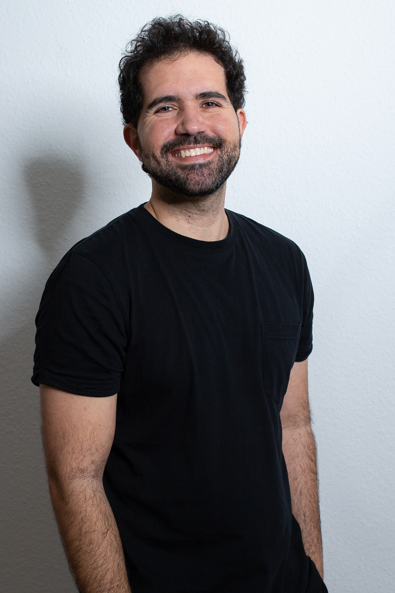

Gabriel Costa Soares
Photography
scroll down
Every Open
Eye Is Not
Seeing
Moin, I'm Gabriel, a freelance photographer located in Hamburg. My goal is to infuse my work with intensity and dynamism. A significant portion of my portfolio highlights the dedication and enthusiasm of actors, dancers, models, painters, and musicians to their craft. I am a strong proponent of spontaneity and complete creative freedom in photography. A truly impactful photograph can only be achieved when the photographer forges an emotional connection with their subject. It's through this connection that a photo can be deemed 'authentic'
